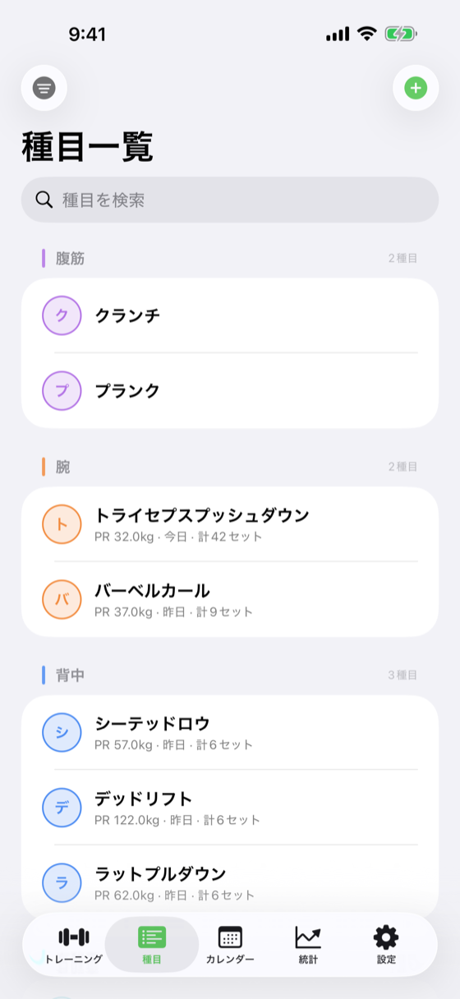

画面イメージ （fastlane snapshot 自動撮影 / iPhone 17 Pro Max）

cd ios-apps/WorkoutDiary && fastlane specs で最新UIに自動更新
目的・役割
登録済みの種目（Exercise）を一覧表示し、追加・編集・削除を行う画面。カテゴリ別フィルタ対応。v1.1.0 で行の操作 UI を「➕・✏️・🗑」アイコン常時表示に刷新し、v1.1.1 でさらに管理用 UI に振り切った刷新を実施した（タップ動作変更・部位カラー統一・メタ情報表示・スワイプ操作・ExerciseStatsCalculator 導入）。
UI 構成（v1.1.1 以降）
要素 種類 説明 カテゴリフィルタ ScrollView 横並び Chip ボタン 胸/背中/肩/腕/脚/腹筋/有酸素/その他でフィルタ。選択中の部位カラーで光らせる Section ヘッダー 部位カラー左ボーダー (3px) 部位名 + 件数（例: 「胸 (5)」）を左ボーダー付きで表示 種目行 List 行 頭文字バッジ（部位カラー fill opacity 0.18 + strokeBorder）+ 種目名 + メタ情報 メタ情報 Text（サブタイトル） 「PR 100kg · 先週 · 計47セット」を相対表示（今日/昨日/N日前/先週/2週間前/1ヶ月以上前） 行タップ NavigationLink / onTapGesture ExerciseFormView（編集画面）へ直行（v1.1.1 変更: 旧 AddWorkoutView プリセット起動を廃止） 左スワイプ swipeActions 削除アクション → Undo Toast（保留中削除パターン） 右スワイプ swipeActions 編集アクション → ExerciseFormView（編集モード） 追加ボタン ToolbarItem ExerciseFormView（新規モード）を起動
v1.1.0 変更点
v1.1.1 変更点（種目一覧刷新）
-
タップ動作変更 : 行タップ → ExerciseFormView（編集画面）へ直行。ワークアウト追加ではなく管理用 UI に振り切り
-
「➕・✏️・🗑」アイコン廃止 : 行が広く使えるようスワイプ操作に移行
-
スワイプ操作 : 左スワイプで削除（Undo Toast）、右スワイプで編集
-
部位カラー統一 : Section ヘッダーに部位カラーの左ボーダー（3px 縦線）と件数表示
-
頭文字バッジを部位カラー化 : opacity 0.18 fill + strokeBorder + minimumScaleFactor(0.7) で日本語対応
-
メタ情報表示 : 「PR 100kg · 先週 · 計47セット」を相対表示
-
ExerciseStatsCalculator 導入 : 各行の統計値をメモ化キャッシュから取得（詳細は
ExerciseStatsCalculator 機能仕様書 ）
状態
状態変数 型 説明 pendingDeletionIDs Set<UUID> Undo Toast 保留中の削除 ID。この ID を持つ種目は @Query フィルターで除外して表示 selectedCategory ExerciseCategory? 選択中の部位フィルタ（nil = 全表示） statsCalculator ExerciseStatsCalculator 種目統計値のメモ化キャッシュ（@State で保持）
遷移
操作 遷移先 行タップ ExerciseFormView（編集モード） 右スワイプ「編集」 ExerciseFormView（編集モード） 左スワイプ「削除」（履歴0件の種目） Undo Toast 表示 → 5秒後に確定 or 「元に戻す」でキャンセル 左スワイプ「削除」（履歴あり種目） confirmationDialog「この種目にはN件の記録があります。削除すると過去の記録もすべて消えます」（destructive）→ 確認後に Undo Toast（v1.2.1追加） 追加ボタン（ナビゲーションバー） ExerciseFormView（新規モード）
使用するデータモデル
@Model final class Exercise {
var id: UUID
var name: String
var category: String // ExerciseCategory.rawValue
var memo: String
var createdAt: Date
var useCardioInput: Bool = false
}
// v1.1.0 追加: 部位カラー
enum ExerciseCategory: String, CaseIterable {
case chest, back, shoulders, arms, legs, abs, cardio, other
var color: Color { ... } // 8部位のカラー定義（カレンダーヒートマップ等で使用）
var displayName: String // 日本語表示名
}実装メモ
初回起動時に insertDefaultExercises() でデフォルト種目を挿入
削除時は @Relationship(deleteRule: .cascade) で関連 WorkoutSet も削除
v1.1.0: スワイプ削除廃止。「➕・✏️・🗑」アイコンを各行右端に常時表示
v1.1.0: 行タップ = ➕アイコンタップ = AddWorkoutView（プリセット）に統一
v1.1.0: ExerciseCategory に color プロパティ追加（カレンダーヒートマップ用）
v1.1.1: タップ動作 → ExerciseFormView（編集）へ直行に変更。管理用 UI に振り切り
v1.1.1: 「➕・✏️・🗑」アイコン廃止、スワイプ操作（左=削除/右=編集）に変更
v1.1.1: Section ヘッダーに部位カラー左ボーダー（3px）と件数表示
v1.1.1: 頭文字バッジを部位カラー化（fill opacity 0.18 + strokeBorder + minimumScaleFactor 0.7）
v1.1.1: メタ情報「PR · 最終使用日（相対） · 累計セット数」を ExerciseStatsCalculator から取得
v1.1.1: pendingDeletionIDs（Set<UUID>）で保留中削除を管理し、Undo Toast に登録
v1.2.1: 部位フィルタ Menu ボタンに accessibilityLabel「絞り込み」を付与
v1.2.1: 履歴あり種目（累計セット数 ≥ 1）の削除に confirmationDialog を追加（誤削除防止）
v1.2.1: 種目行末尾に chevron.right（disclosure indicator）を追加してタップ可能性を可視化
関連
変更履歴
バージョン 日付 変更内容 1.0 2026-05-09 初版作成 1.1 2026-05-23 v1.1.0: スワイプ削除廃止→「➕/✏️/🗑」アイコン常時表示に変更、行タップ=AddWorkoutViewプリセット起動に統一、ExerciseCategory.color プロパティ追記 1.2 2026-05-24 v1.1.1: 種目一覧刷新。タップ動作をExerciseFormView（編集）直行に変更、「➕/✏️/🗑」アイコン廃止→スワイプ操作（左=Undo Toast削除/右=編集）、Section ヘッダー部位カラー左ボーダー+件数、頭文字バッジ部位カラー化、メタ情報表示（PR・相対日時・累計セット数）、ExerciseStatsCalculator 導入、pendingDeletionIDs による保留中削除パターン 1.3 2026-07-07 v1.2.1 UI/UX/A11y監査対応: フィルタMenuに「絞り込み」VoiceOverラベル付与、履歴あり種目の削除に確認ダイアログ追加（誤削除防止）、種目行末尾に disclosure indicator（chevron）追加